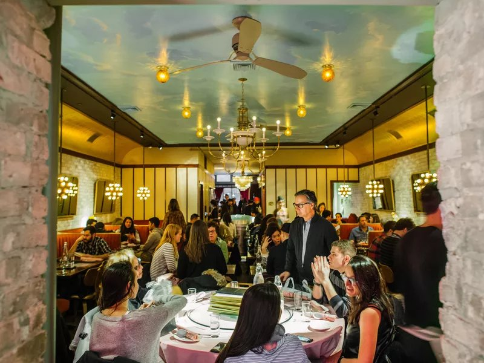

Mission Chinese Food
171 E Broadway, New York, NY 10002
| Monday | 5:30 pm - 11:00pm |
| Tuesday | 5:30 pm - 12:00am |
| Wednesday | 5:30 pm - 12:00am |
| Thursday | 5:30 pm - 12:00am |
| Friday | 5:30 pm - 12:00am |
| Saturday | 12:00 pm - 4:00pm, 5:30 pm - 12:00 am |
| Sunday | 12:00 pm - 4:00pm, 5:30 pm - 11:00 pm |
Reviews
Steve
October 26, 2016
Rating: 4-
Mission Chinese Food has grown up from its scrappy Orchard Street days into a big, two story restaurant equipped with a pizza oven, a prime rib cart, and a much broader menu. Yes, it still has all the hits — the kung pao pastrami, the thrice cooked bacon —but chef/proprietor Danny Bowien and executive chef Angela Dimayuga have also added a raw bar, two generous family-style set menus, and showstoppers like duck baked in clay. And you can still get a lot of food without breaking the bank.